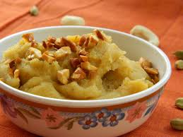

Besan-Halwa

This is very tasty sweetdish.It makes in very less time and all the family members like this.
- 1/2 cup ghee
- 2 cups gram flour
- 2 tbsp rava/semolina/fine
- 2 cups milk
- 1/2 cup sugar
- 2 tbsp saffon milk
- 2 tbsp cashews,chopped
- 1/4 tsp cardamom powder
- First of all,we take a large pan.
- In a large pan,take 1/2 cup ghee.
- Once the ghee is hot,add 1/2 cup gram flour
- Also,add 2 tbsp rava.If you are using coarse gram flour then you can skip the rava.
- Fry on low flame while stirring continuously.Roast for about 25-30 minutes or until the gram flour turns golden brown.
- Now add 2 cups milk and stir well. Stir continuously ,untill the gram flour absorbs all the milk without forming lumps.Cook until the pan.
- Aslo,add 1/2 cup sugar and 2 tbsp saffron milk.To prepare saffron milk,soak a few threads of saffron in 2 tbsp hot milk.
- Mix well until the sugar dissolves completely and set aside the pan.Aslo,add 2tbsp cashew nuts and 1/4tsp cardamom powder.Mix well.
- Finally ,enjoy besan-halwa recipe garnished with more cashew nuts.